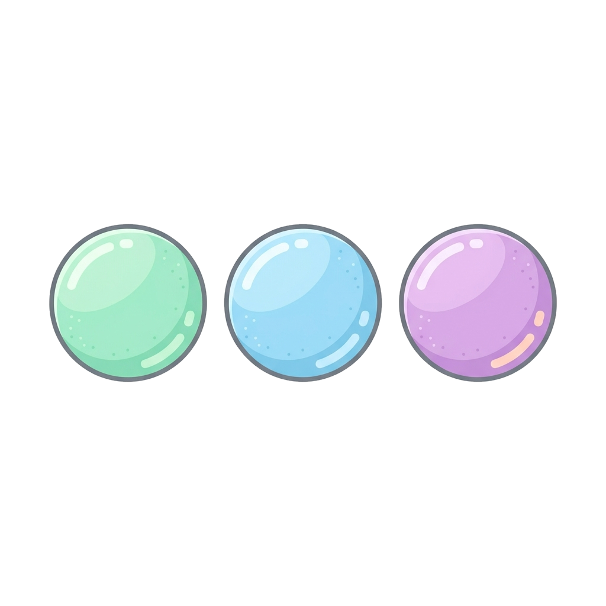

2 · Forme farmaceutiche
Forme solide
Le forme farmaceutiche sono le diverse forme fisiche in cui
un farmaco viene presentato. Si classificano in solide, liquide e
semisolide: qui vediamo le prime.
Pillola
Formulazione solida ottenuta per compressione del farmaco insieme al suo eccipiente.
Capsula
Preparazione solida in cui i farmaci sono racchiusi in un involucro commestibile, di solito amido o gelatina.

Confetto
Compresse rivestite con zuccheri, cere, resine o gomme, che mascherano sapore e odore.
Polvere
Principi attivi allo stato secco, con particelle di dimensione ridotta; possono contenere eccipienti oppure no.
Supposta
Pensata per essere inserita negli orifizi rettale, vaginale o uretrale: si scioglie alla temperatura corporea.
Solidepillola, capsula, confetto, polvere, supposta
Liquidesciroppi, soluzioni, sospensioni, gocce
Semisolidecreme, unguenti, gel, paste
Eccipiente
Sostanza inerte aggiunta al medicinale per controllarne volume e forma e facilitarne la somministrazione, senza esercitare effetti farmacologici propri.
8